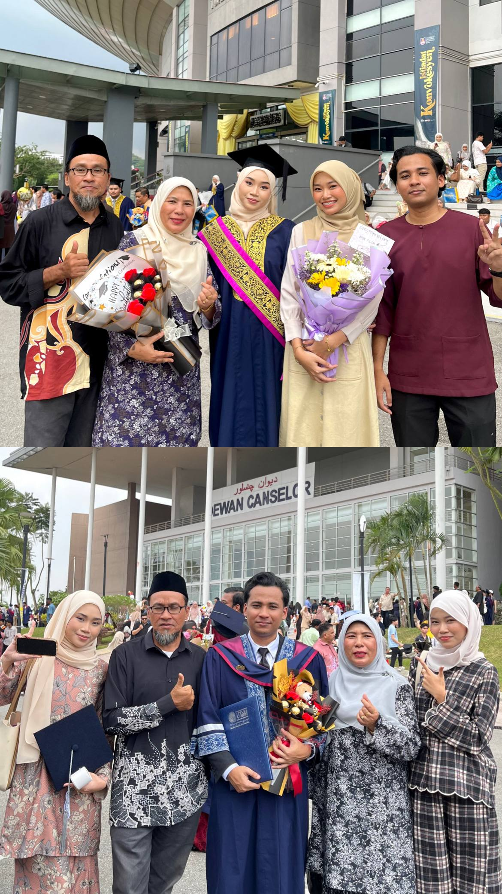
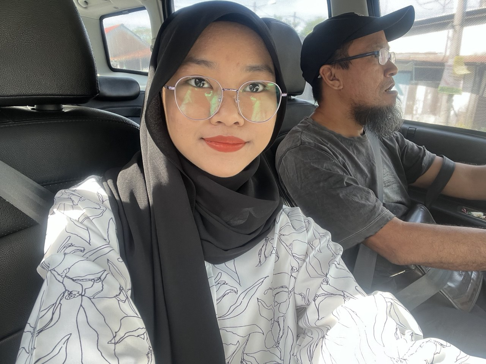
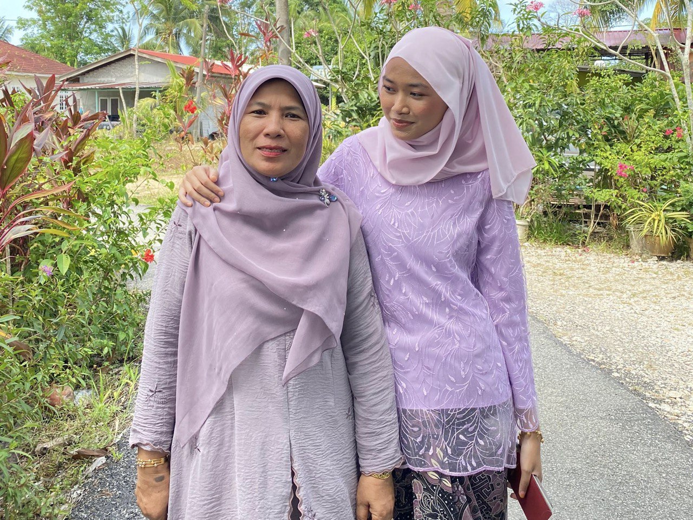
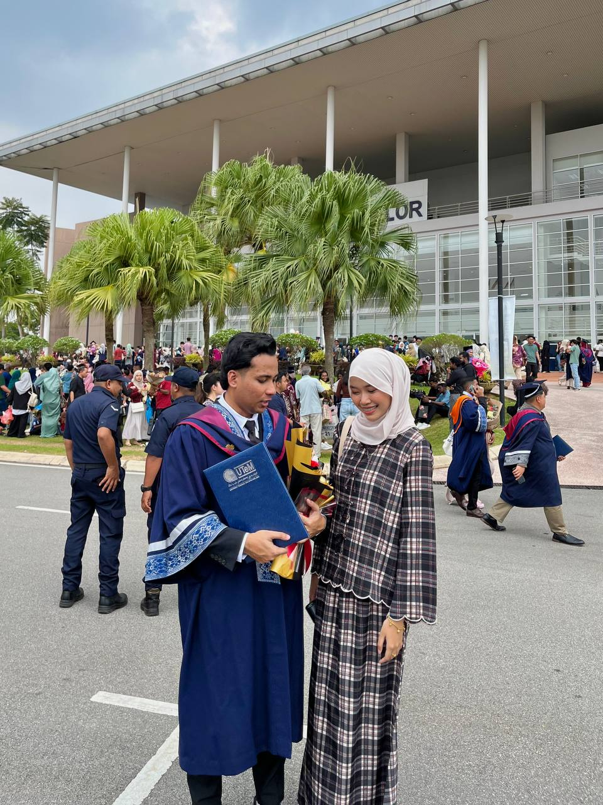
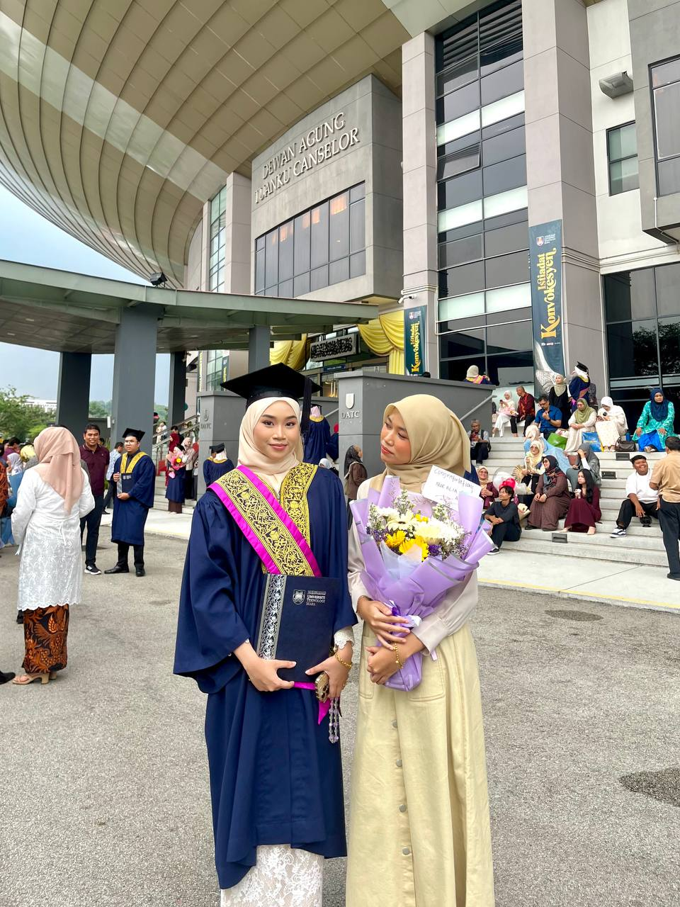
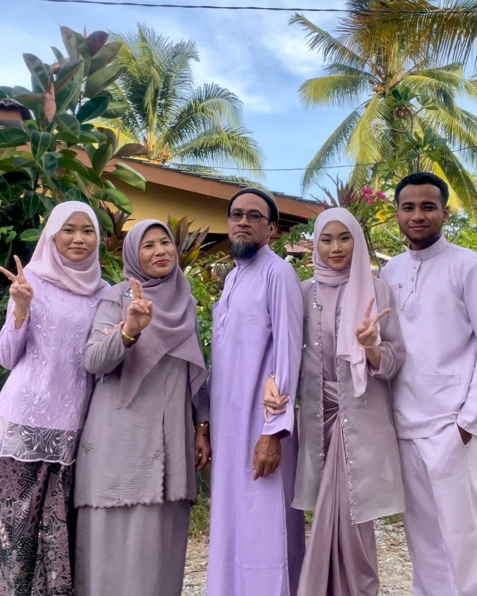

DEEJA | FAMILY
A blessing I'll forever be thankful for.

My Family
I come from a small but loving family that has always been my biggest source of strength and support. We may not be perfect, but we’ve always had each other through every up and down. Here’s a little introduction to the people who mean the world to me:
Father: Zainal bin Martin 🧔
Mother: Rohana binti Jusoh 🧕
Brother: Muhammad Nazim Syakir binti Zainal 👦
Sister: Nur'Alia Aisya binti Zainal 👧
Place of Birth: Muar, Johor
Place of Birth: Bachok, Kelantan
Place of Birth: Bachok, Kelantan
Place of Birth: Bachok, Kelantan
💭Funny, right? All my siblings were born in Kelantan, but I’m the only one who ended up being born in Kuala Lumpur. I once asked my mom why I wasn’t born in Kelantan like the rest of them. She told me that she didn’t even have time to go back to Kelantan because I decided to come out earlier than expected. I was supposed to be born on the 7th something, and she said to me, “kamu la mengada nak keluar awal.” 😂

💖 IBU AYAH 💖
My parents are my backbone and have always been there for me. I am who I am today because of them. I try my best every day to make them proud. I want to succeed for them, and my prayers for them are never-ending. I honestly don’t know what life would be like without them. I love them so much.
Meet My Family.
-
Ayah
This is my father. His birthday is just one month earlier than mine — on the 12th of December. Pretty cute how our dates almost match, right? Hehe. He is also two years younger than my mother. He’s originally from Muar, Johor, with a touch of Javanese heritage. Since he was young—I'm not even sure what age—he’s lived away from his family and stayed with my aunt (his sister) in Gombak. My relatives from Johor speak fluent Javanese, even my cousins. But me? Sadly, I don’t understand a single word because my father never speaks it at home. Hahaha. Still, I truly appreciate and love the culture.He’s the kind of person who rarely appears in photos. One minute he wants to join, the next minute he’s gone. That’s why seeing his face in pictures is considered a rare moment. My father is a strict man—when he gets angry, the whole world feels it. Terrifying, honestly. He loves cats, just like I do. Right now, he has four: Oyen, Uteh, Gee, and Bulat. He actually had many more, but some have passed on. I love to play with his cats. His favourite hobby is fishing. Whenever he goes, he usually comes home with fish, or sometimes prawns and crabs. He doesn’t do short fishing trips—his are usually one to two days long. My father works as a mechanic, running his own workshop. He is also great in cooking, especially when it comes to soup. I absolutely love his soup, and every time he makes it, I can’t help going back for seconds… and often thirds! Somehow, the way he brings joy to our little family is through his cooking and by bringing home delicious food for us to enjoy. It’s his little way of showing love and care — making sure that every meal is not just filling, but also comforting. Truly, with him around, we’ve learned that a happy family often starts with a happy tummy! His food doesn’t just satisfy our hunger; it fills our hearts too, creating moments of warmth and togetherness that we cherish. I don’t always show him how much he means to me, but I truly love and appreciate him. Even if I don’t say it out loud every day, he’s always in my heart, and I hope he knows how much he’s cherished.
-
Ibu
This is my mother. Wow, she’s fierce—like a lion! My mother was born on 30 July 1970, making her two years older than my father. She’s originally from Bachok, Kelantan, and when she gets angry, her Kelantanese slang comes out full force. Even though she can be strict, she’s always been my biggest supporter, encouraging her children to chase their dreams. From the very beginning of our studies until the end, she has worked tirelessly for us. I wish I could ever repay all the effort and love she has put into raising us. She constantly reminds me to study diligently, never skip my prayers, and find my own way to learn. Her guidance has shaped so much of who I am today. When I achieved my academic goals, I felt a deep sense of pride—not just for myself, but because I was able to make her proud with even a small effort. Cooking is another way she amazes me—seriously, everything she makes is unbelievably delicious especially since she comes from the East Coast of Malaysia. My absolute favorites are her nasi kerabu and nasi dagang — the way she serves them is simply flawless. I love her cooking so much; no matter what she prepares, it’s always perfect and absolutely delicious. Sometimes, when I’m away at college, the taste of her dishes lingers in my mind, making me miss home even more. Her food is not just nourishment, but a comforting reminder of family and love. No matter what she cooks, I always want seconds! My mother works as a dormitory supervisor at SM Sains Hulu Selangor, and I used to love tagging along to her workplace. I also love helping her tidy up the kitchen and the house. Those moments, though simple, are memories I treasure deeply. Sometimes, when I look at her face, I feel a whirlwind of emotions—touched, happy, proud, sentimental, and overjoyed—all at the same time. I hope I can make her even happier with my future achievements. At home, I love giving her random hugs and kisses on her cheeks. I miss her so much, and I truly love her from the bottom of my heart. She’s my constant inspiration, my guiding star, and my safe place.
-
Abang
This is my one and only brother — the only abang I’ve ever had, and the only one I’ll ever need. Born on 27 January 2001, he’s a January baby just like me, which somehow makes me feel like we’ve shared a tiny connection even before we understood what “siblings” meant. When we were kids, we weren’t exactly close. He was always outside running around with his friends, while I stayed back and played with my sister. We lived in our own little worlds. But at night, there were moments — short, random, silly moments — where we’d joke around before bed. Moments that, at the time, felt small, but now they feel like little pieces of my childhood. Everything changed after we moved to Batang Kali. He entered a boarding school and only came home twice a month. Those years made me realize how easy it is to miss someone you don’t get to see every day. We didn’t spend much time together then, but those short weekends when he returned always felt a bit livelier. It wasn’t until we both entered university that our bond finally grew in a way I never expected. We became closer, more comfortable, more open. He still annoys me constantly — but in the kind of way that shows he cares. He’s the eldest brother who checks in quietly, who jokes loudly, and who somehow manages to be sweet and irritating at the same time. And trust me, I annoy him back just as much, so it’s definitely not one-sided hahaha. My brother graduated with his degree from UTEM, Melaka, and is now working at a company in Damansara. What I admire most about him is his work ethic. Even on weekends, he works as a J&T courier to earn extra income. He never complains and he just keeps going. As his little sister, I’ve seen his effort, his sacrifices, and how hard he pushes himself for the sake of our family. I’m truly grateful to have a brother like him. He may not say it out loud, but through his actions, he shows exactly what kind of abang he is reliable, hardworking, protective, and someone I’ll always be proud of.
-
Kakak
From the very beginning, my sister has been someone I both clash with and admire endlessly. She’s the kind of person who always wants to come out on top in every little argument, and being her younger sister, I’ve never been one to back down. She was born on 23 October 2003, and from as early as I can remember, I’ve looked up to her. There’s something about her presence that draws admiration — her confidence, her determination, and the way she carries herself. She has always inspired me, constantly pushing me to be better and reminding me that having someone like her as a sister is truly a blessing. No matter how many times we bicker, I know that behind every teasing remark and playful challenge lies someone who genuinely cares, and that’s what makes her so special to me. From school days, she was always an academic achiever, consistently scoring excellent grades and never failing a major exam. Even as she transitioned into university life, her determination never wavered. After finishing her SPM, she received an offer to enter a matriculation college. However, during the short time of online classes amid the lockdown, she realized the academic pressure was too much and could affect her mental health. Initially, our family was hesitant about her decision to leave, but after she expressed her feelings, they supported her in doing what was best for her. During that brief matriculation period, she had to complete two to three chapters a week — a pace she found overwhelming. She decided to wait for the second intake offer from UiTM, and eventually, she was accepted. Although slightly behind her peers, she proved her capability by graduating with ANC in her diploma in Science and Mathematics at UiTM Tapah. Now, she’s pursuing her degree at UiTM Shah Alam, with just two semesters remaining. She has even told me that she hopes to achieve another ANC for her degree — and I have no doubt she will. My sister is not just hardworking and determined; she’s also someone who inspires me to be better every day. I wish her nothing but the best. I love her dearly, and I truly believe she’s the best sister I could ever have.

I’m truly grateful to be part of Zainal’s Family. They are the people who shape me, ground me, and remind me what love really feels like. With them, life always feels a little lighter, a little warmer, and a lot more meaningful. No matter where I go or how far I grow, this family will always be the place my heart calls home.